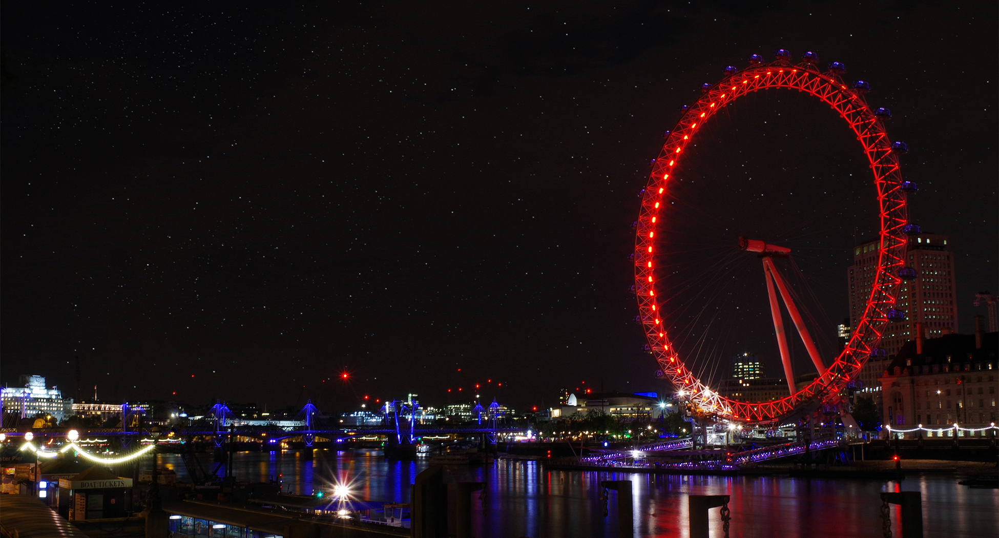
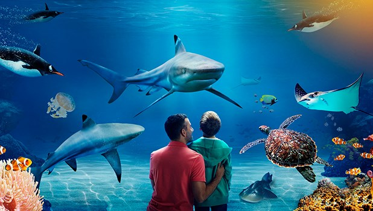
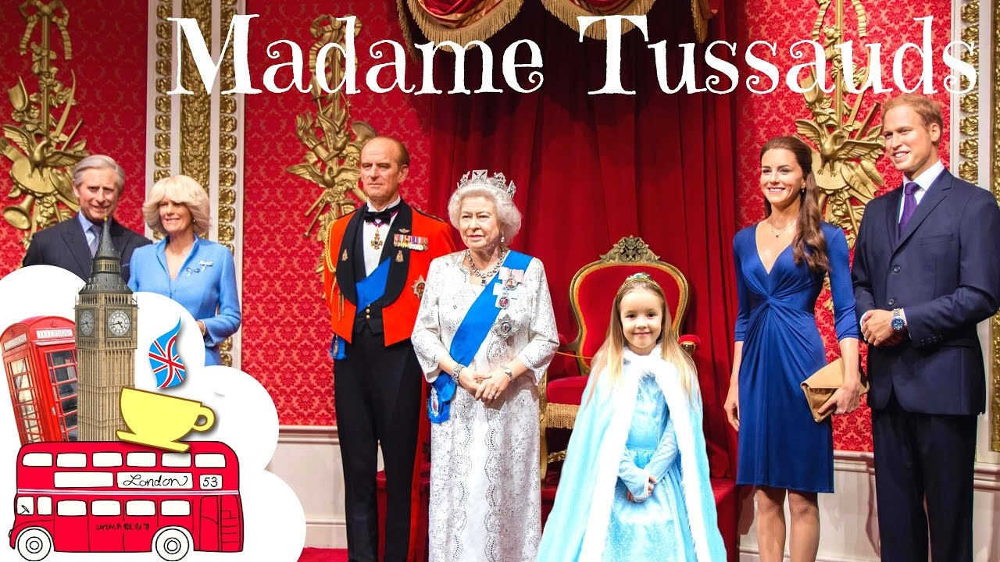
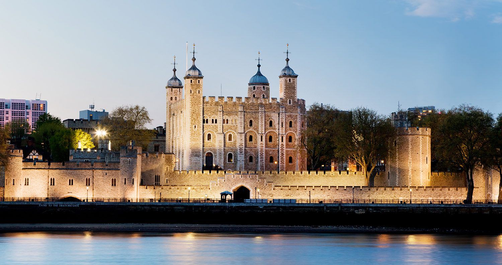

Are you planning to visit London soon? Find free or cheap things to do on your London trip; fun and cool things to do; things to do this weekend; things to do with kids; unusual or romantic things to do in London. There are plenty of London breaks to choose from, whether you are coming for a day trip or for a whole weekend in London. Plan ahead for your trip to London: search for upcoming events, museum and galleries, sightseeing tours, theatre shows, bars, restaurants, nightlife, days out and even day trips from London. Visiting London has never been easier with these ideas for London breaks.
1. Coca-Cola London Eye

The Coca-Cola London Eye is a major feature of London's skyline.
It boasts some of London's best views from its 32 capsules, each weighing 10 tonnes and holding up to 25 people.
Climb aboard for a breathtaking experience, with an unforgettable perspective of more than 55 of London's most famous landmarks – all in just 30 minutes!
The Coca-Cola London Eye is centrally located in the heart of the capital, gracefully rotating over the River Thames opposite the Houses of Parliament and Big Ben.
An experience on the Coca-Cola London Eye will lift you high enough to see up to 40 kilometres on a clear day and keep you close enough to see the spectacular details of the city unfolding beneath you.
2. SEA LIFE London

The new SEA LIFE London Aquarium is home to one of Europe’s largest collections of global marine life and the jewel in the crown of the 28 SEA LIFE attractions in the UK and Europe.
Situated in the heart of London, the experience takes visitors on an immersive and interactive journey along the Great Oceanic Conveyor.
As well as allowing millions of people to discover the marvels of the marine world, the SEA LIFE network has an important role to play in helping safeguard our seas and their inhabitants for the future.
The SEA LIFE London Aquarium provides the UK with a leading centre of excellence on marine management, conservation, preservation and education in the heart of the capital.
3. Warner Bros. Studio Tour
Warner Bros. Studio Tour London provides an amazing new opportunity to explore the magic of the Harry Potter™ films – the most successful film series of all time.
This unique walking tour takes you behind-the-scenes and showcases a huge array of beautiful sets, costumes and props.
It also reveals some closely guarded secrets, including facts about the special effects and animatronics that made these films so hugely popular all over the world.
Step inside and discover the actual Great Hall; Explore Dumbledore’s office and discover never-before-seen treasures;
See iconic props from the films, including Harry’s Nimbus 2000 and Hagrid’s motorcycle;
Learn how creatures were brought to life with green screen effects, animatronics and life-sized models.
4. Madame Tussauds London

With 14 interactive areas, Madame Tussauds London combines glitz, glamour and incredible history with more than 300 stunning wax figures.
Walk down the red carpet and strike a pose with Benedict Cumberbatch and Johnny Depp, before exploring our sports zone with Usain Bolt and David Beckham.
Enoy a once-in-a-lifetime audience with Her Majesty The Queen and The Duke and Duchess of Cambridge before stepping on stage with music icons, including Miley Cyrus.
Then, after a behind-the-scenes look at how sculptors create the figures, ride in a taxi and relive the rich history of London.
Next, step up to your favourite Marvel Super Heroes and immerse yourself in the Marvel Super Heroes 4D movie, before meeting heroes and villains from Star Wars Episodes I – VI.
5. Tower of London

Despite the Tower of London's grim reputation as a place of torture and death, within these walls you will also discover the history of a royal palace, an armoury and a powerful fortress.
Don't miss Royal Beasts and learn about the wild and wonderous animals that have inhabited the Tower, making it the first London Zoo.
Discover the priceless Crown Jewels, join an iconic Beefeater on a tour and hear their bloody tales, stand where famous heads have rolled, learn the legend of the Tower's ravens, storm the battlements, get to grips with swords and armour, and much more!
This content has been supplied by HM Tower of London